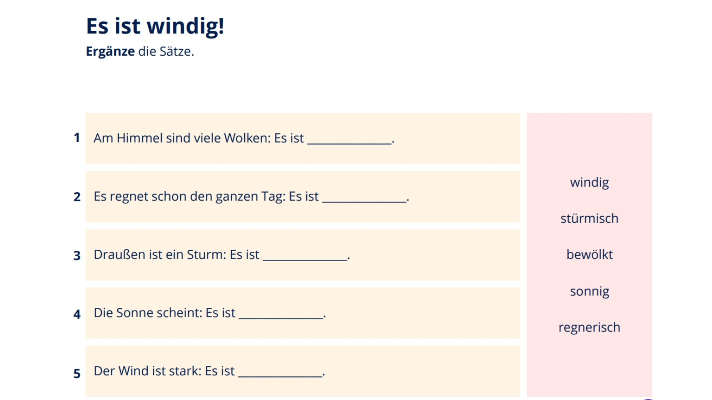
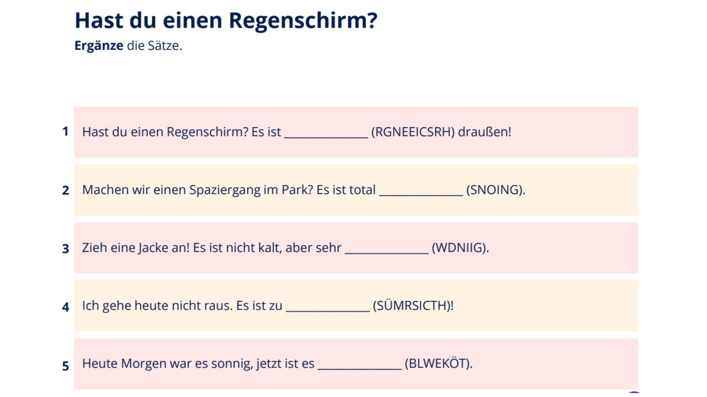
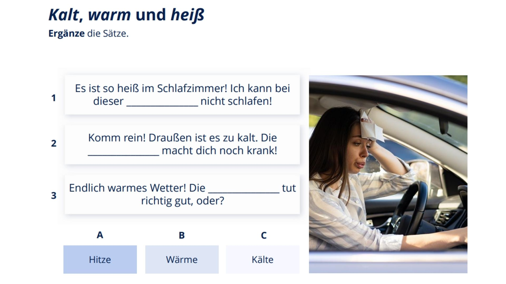
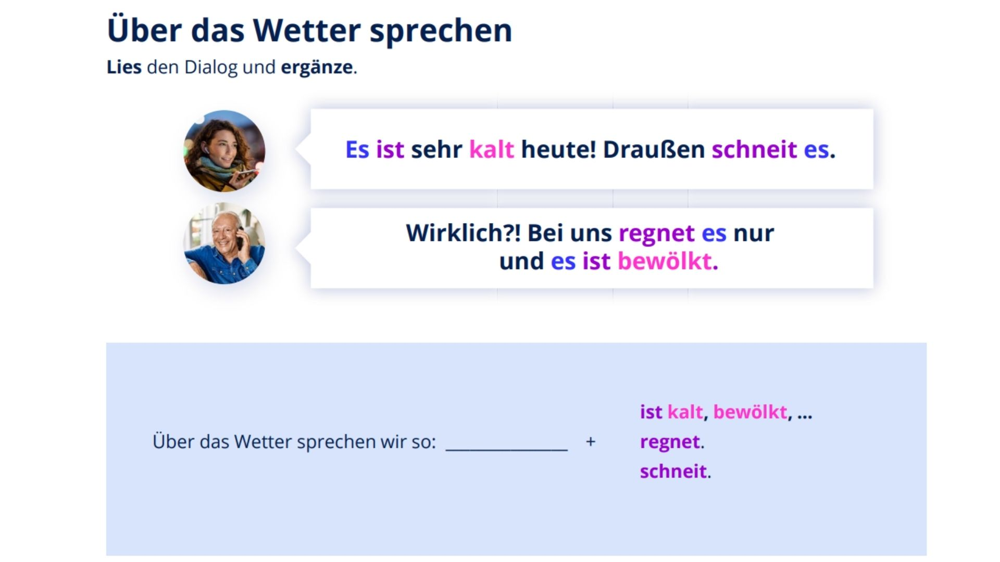
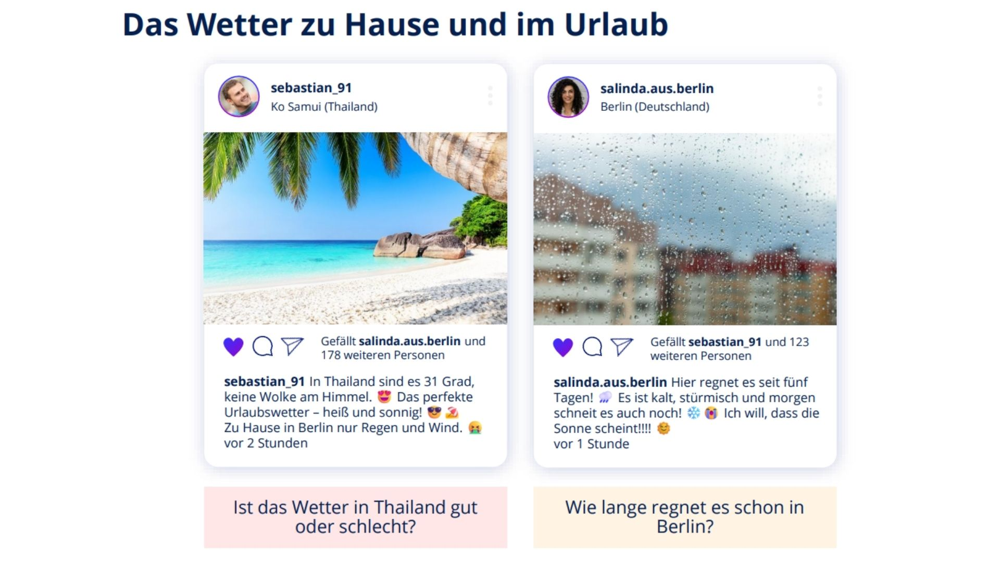
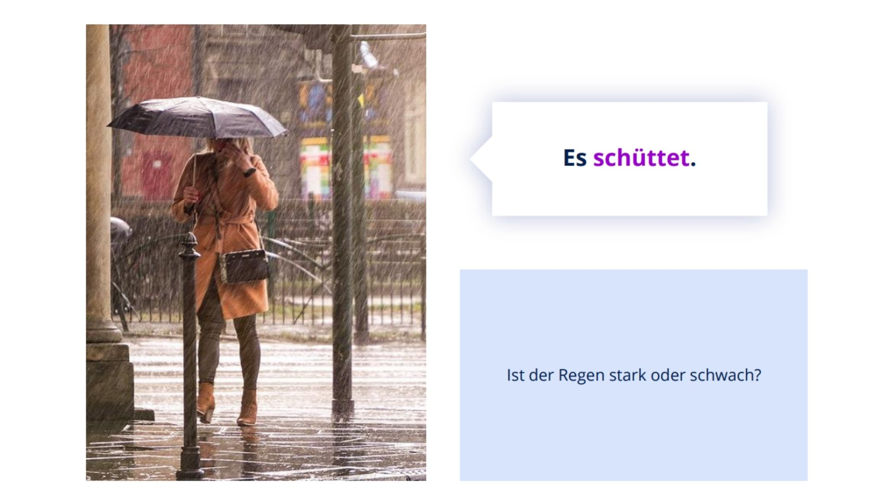

Lektion 61: Tekrar ve Pekiştirme Ödevi
Eğitmen: **Esra DOĞAN ÜNAL**
Aşağıdaki cümlelerdeki boşlukları uygun hava durumu kelimeleriyle doldurun.
Görseldeki karışık harfleri kullanarak doğru hava durumu kelimesini bulun ve yazın.
Boşlukları uygun kelimelerle (**Hitze, Wärme, Kälte**) doldurun.
Slayt 4'teki diyalog ve yapıyı hatırlayın. Hava durumunu ifade etmenin iki temel yolunu tamamlayın.
Görseldeki Sebastian ve Salinda'nın sosyal medya postlarını inceleyerek cümlelerin doğru (Richtig) mu yanlış (Falsch) mı olduğunu işaretleyin.
En az 10 tam Almanca cümle yazın. Bu metinde bulunduğunuz yerdeki hava durumunu detaylıca anlatın ve Slayt 10'daki gibi **"Es schüttet"** kelimesini kullanmaya çalışın.
Lütfen şu an (ödevi yaparken) bulunduğunuz şehirdeki hava durumuna internetten bakın veya pencereden kontrol edin. Bu bilgileri kullanarak **en az 3 cümle** ile hava durumunu Almanca anlatın.
(Örnek: Heute in Istanbul ist es 15 Grad. Es ist windig, aber die Sonne scheint.)
Aşağıdaki kelimeleri okuyun ve Slayt 9'daki 5 görseldeki hava durumunu Almanca bir cümle ile anlatarak kaydınıza ekleyin.